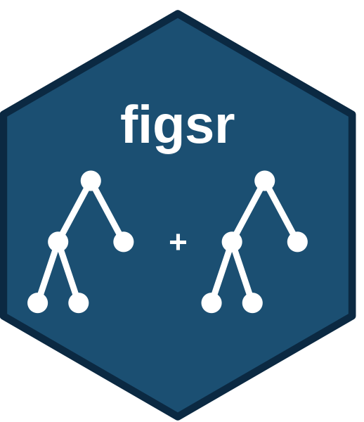

figsr is an R implementation of Fast Interpretable Greedy-Tree Sums (‘FIGS’), developed by researchers at UC Berkeley and Stanford (Tan et al., PNAS 2023, https://doi.org/10.1073/pnas.2310151122).
Unlike standard single decision trees (‘CART’) which suffer from inductive bias against additive structures and repeat subtrees, figsr greedily grows a sum of shallow decision trees ( \hat{f}(x) = \sum_k \hat{f}_k(x) ). It achieves prediction accuracy close to random forests or gradient boosting while remaining human-interpretable with concise decision rules.
Installation
Install the released version from CRAN:
install.packages("figsr")Or the development version from GitHub:
# install.packages("remotes")
remotes::install_github("bonijoao/figsr")Quick Example with tidymodels
figsr seamlessly integrates with parsnip and tidymodels using native pipe syntax (|> or %>%):
library(tidymodels)
library(figsr)
# 1. Simulate additive data
set.seed(42)
df <- tibble(
x1 = rnorm(300),
x2 = rnorm(300),
x3 = rnorm(300),
y = 3 * (x1 > 0) + 2 * (x2 > 0.5) - 1.5 * (x3 < -0.2) + rnorm(300, sd = 0.3)
)
# 2. Specify FIGS model using parsnip
figs_spec <- figs_tree(max_splits = 6, min_n = 5) |>
set_engine("figsr") |>
set_mode("regression")
# 3. Fit workflow
figs_fit <- df |>
recipe(y ~ x1 + x2 + x3) |>
workflow(figs_spec) |>
fit(data = df)
# 4. Predict tidy tibble
preds <- predict(figs_fit, new_data = df)
head(preds)Features
-
Tidymodels & Parsnip Integration:
figs_tree()model specification. -
Hyperparameter Tuning: Tune
max_splitsandmax_treeswithtune_grid(). -
Interpretability & Visualization:
summary(fit)prints logical IF-THEN rules;ggfigs(fit)(orautoplot(fit)) draws the fit with ‘ggplot2’ as a tree, rule list, waterfall, cutpoint or partial dependence view, optionally interactive;plot(fit)draws tree sums in base graphics. -
Variable Importance:
figsr_importance(fit)ranks feature impurity reductions. -
Bagging-FIGS: Bootstrap ensembling via
bagging_figs().
Documentation
The package website, https://bonijoao.github.io/figsr/, has the full function reference and the articles (getting started, missing values).